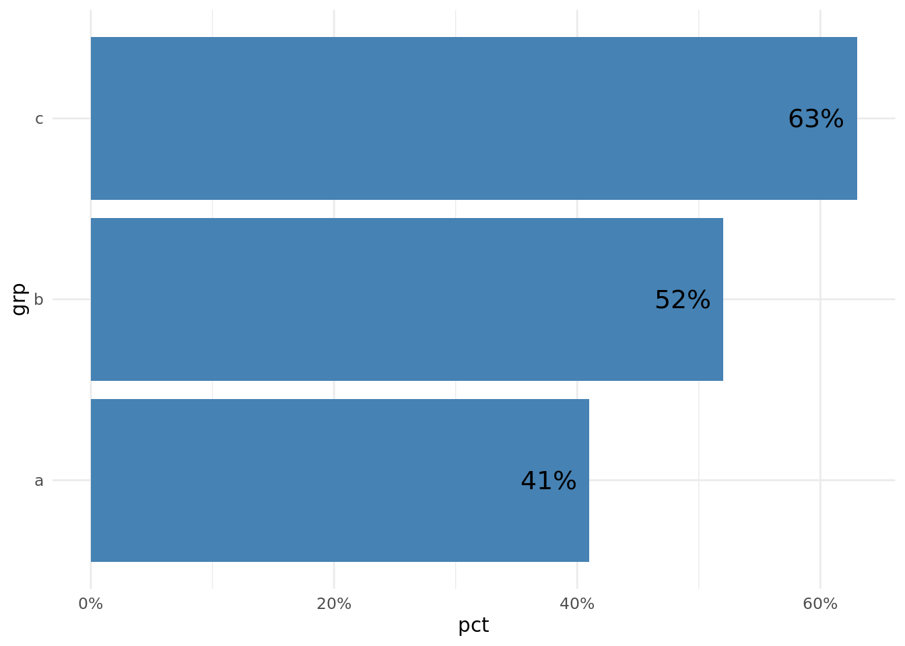

pct_to_string <- function(x) {
paste0(round(100 * x, digits = 1), "%")
}If you’re a sane and respectable person, you keep percentages in your data formatted as decimals (e.g. 50% as .5, 71% as .71). However, you may also find that you need to present these numbers in reports/visuals/tables in a more readable way (i.e. as “50%”). If you’re like me, you’ll often find yourself creating additional columns that take your (correct) percent-as-decimal columns and turn them into strings. The other day, I realized that I was doing this a lot, and so I wrote a very simple function to handle this for me, which I added to my personal/miscellaneous R package, {eemisc}. Here’s that function:
Very simple, very straightforward, but it’ll save me a little bit of typing. One common (for me) use case is:
library(tidyverse)
tmp <- tibble(
grp = c("a", "b", "c"),
pct = c(.41, .52, .63),
txt = pct_to_string(pct)
)
ggplot(tmp, aes(x = pct, y = grp)) +
geom_col(fill = "steelblue") +
geom_text(aes(label = txt, x = pct - .01), hjust = 1, size = 5) +
scale_x_continuous(labels = scales::percent_format()) +
theme_minimal()
Which directly prints our string-formatted percent on the bar.
While writing this function, though, I made a few tweaks to the “base” version above, and I thought this would be a decent opportunity to write a metacognitive reflection on the process of developing this function. Hopefully this is helpful for people just starting out with writing R functions.
Base Function
Right, so, the point of this function is to take a percent (as a decimal) and turn it into a string. The base version of that function is the same as we presented above:
pct_to_string <- function(x) {
paste0(round(100 * x, digits = 1), "%")
}And there’s nothing necessarily wrong with this. It works like we’d expect it to:
pct_to_string(.1)[1] "10%"pct_to_string(.111)[1] "11.1%"Digits Argument
The vast majority of the time, I’ll want to present these string percentages with a single decimal place (e.g. “11.1%”). It’s pretty rare – at least in the contexts I work in – for the hundredths place in a percentage to matter much, and including it detracts more than it helps. If two “groups” score 11.12% and 11.14%, these are functionally identical in my mind.
That said, there may be some cases where I do want to include a hundredths decimal point. More likely, there may be cases where I don’t want to include any decimal points. In the base version of pct_to_string(), I hardcoded the function to provide 1 decimal place (digits = 1). But to allow for some flexibility, I want to make digits an argument. Since I’ll be setting it to 1 99.9% (see what I did there) of the time, I’ll just set 1 as the default. So now our function looks like this:
pct_to_string <- function(x, digits = 1) {
paste0(round(100 * x, digits = digits), "%")
}And we can see this in action like so:
#not specifying a digits argument will use the default of 1
pct_to_string(.1111)[1] "11.1%"#but we can specify a different number of digits if we want
pct_to_string(.1111, digits = 2)[1] "11.11%"Checking Bounds
Most often, the percent data I’m working with is bounded between 0 and 1 (0% - 100%). For instance, if I’m looking at the pass rates for standardized tests, I’m doing something wrong if I have a number greater than 1 or less than 0.
Another note is that, although I’m pretty consistent (insistent? both?) about formatting my percents as decimals, I sometimes pull data from sources where this isn’t the case, and it comes in as, e.g., 80.5 (rather than .805). The Virginia Department of Education tends to format their data this way.
Given both of these tidbits, I want to add an argument to pct_to_string() that checks if values of x are between 0 and 1. In my case, this is mostly to help catch mistakes before I make them. For instance, I want it to stop me if I try to multiply 80.5 * 100 because I didn’t realize the input was 80.5 and not .805. Additionally, because it’s so common that my percents at between 0 and 1, I want it to stop me if I’m working outside of this range.
To accomplish this, I’ll add a check_bounds argument to pct_to_string(). I want this to be a logical argument that, if set to TRUE, will stop the function from running if any values of x are less than 0 or greater than 1.
pct_to_string <- function(x, digits = 1, check_bounds = TRUE) {
if (check_bounds == TRUE & !(min(x) >= 0 & max(x) <= 1)) {
stop("all elements of `x` must be between 0 and 1. If you are intentionally using a percentage outside of these bounds, set `check_bounds = FALSE`")
}
paste0(round(100 * x, digits = digits), "%")
}So let’s see how this works, now:
a <- seq(0, 1, .1)
#this should work
pct_to_string(a) [1] "0%" "10%" "20%" "30%" "40%" "50%" "60%" "70%" "80%" "90%"
[11] "100%"Note that the below will throw an error, so I’m going to capture it using safely() from the {purrr} package and then return the error
b <- seq(0, 1.1, .1)
safe_pts <- safely(pct_to_string)
safe_pts(b)$error<simpleError in .f(...): all elements of `x` must be between 0 and 1. If you are intentionally using a percentage outside of these bounds, set `check_bounds = FALSE`>One note is that you could write this function to throw a warning or a message rather than an error depending on your needs. For my personal use cases, I think it makes more sense to throw an error rather than a warning, but your mileage my vary.
Input Checks
A final thing I want to do is add a few statements to check that the input values I’m providing are valid. If this is a function that really is just for me, I might not do this (mostly out of laziness), but I’m also going to add it to a package that other people at my work use, so I think it makes sense to include these.
Basically, these will just throw an error if you try to pass an invalid value to one of the function arguments. Like with the check_bounds piece earlier, this entials using an if statement to evaluate some parameter values, and then, if these are TRUE, to stop the function and instead return an error message. I also want to make sure that the error messages are actually helpful. We can add these like so:
pct_to_string <- function(x, digits = 1, check_bounds = TRUE) {
if (!is.numeric(x)) {
stop("`x` must be numeric")
}
if (!is.integer(digits) | digits < 0) {
stop("`digits` must be a non-negative integer")
}
if (!is.logical(check_bounds)) {
stop("`check_bounds` must be TRUE or FALSE")
}
if (check_bounds == TRUE & !(min(x) >= 0 & max(x) <= 1)) {
stop("all elements of `x` must be between 0 and 1. If you are intentionally using a percentage outside of these bounds, set `check_bounds = FALSE`")
}
paste0(round(100 * x, digits = digits), "%")
}
# and wrapping this with safely() again to show errors
safe_pts <- safely(pct_to_string)And we can see what happens if we pass in invalid values:
safe_pts(.1, digits = "a")$erorNULLsafe_pts(x = "a", digits = 0)$error<simpleError in .f(...): `x` must be numeric>etc. etc.
Technically, you don’t need some of these checks. If you try to pass a non-numeric value (x) to round(), you’ll get an error. Likewise if you give it an invalid value for its digits argument:
# first creating a safe function to catch error
safe_round <- safely(round)
safe_round(1.1, digits = "a")$error<simpleError in .Primitive("round")(x, digits): non-numeric argument to mathematical function>safe_round("a", digits = 1)$error<simpleError in .Primitive("round")(x, digits): non-numeric argument to mathematical function>But these error messages aren’t quite as helpful as the ones we’ve written.
Wrapping Up
That’s pretty much it – my thought process for creating a pretty simple function to convert percents to strings, as well as how I would build out this function. Hopefully this metacognitive activity was useful for people who are just starting out writing their own R functions!
Reuse
Citation
BibTeX citation:
@online{ekholm2022,
author = {Eric Ekholm},
title = {Function {Writing} {Metacognition}},
date = {2022-05-31},
url = {https://www.ericekholm.com/posts/function-writing-metacognition},
langid = {en}
}
For attribution, please cite this work as:
Eric Ekholm. 2022. “Function Writing Metacognition.” May
31, 2022. https://www.ericekholm.com/posts/function-writing-metacognition.